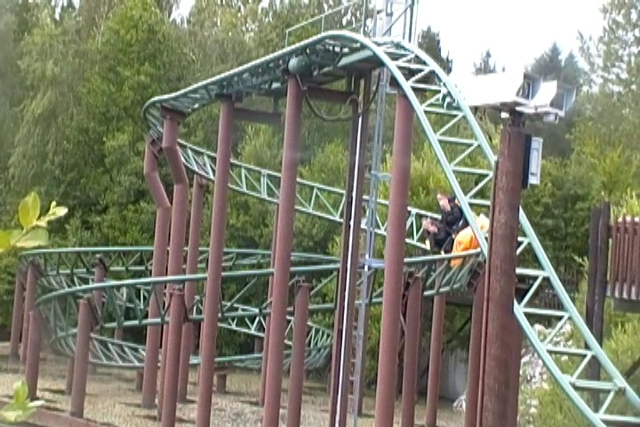
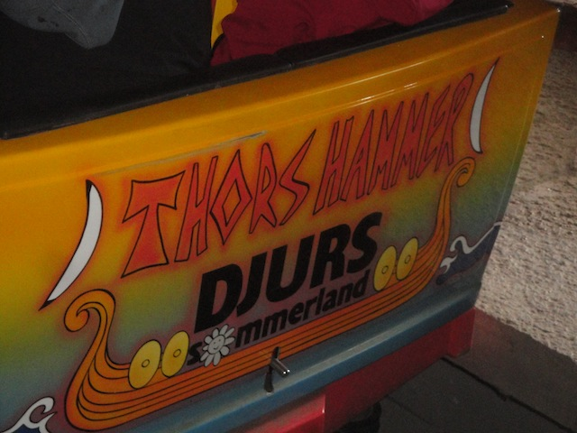

| |
Thor's Hammer Review

We're here at Djurs Sommerland. Today's coaster is the park's Gerslauter Bobsled coaster. Thor's Hammer. It may not look like anything special, but this is a really fun little ride. Yeah, the capacity may not be that great as this ride has the same capacity as a Wild Mouse, and it even kind of looks like one. But this ride is more fun, and it's just a really fun ride. So let's hop in the cars, pull down the lap bar, and away we go. We head up the lifthill, get a nice view of the trees, and then head down into a spiral drop. That gives us some speed and even gets us a couple laterals. We then helix back up, and yeah. It slows us down and gets rid of a lot of speed, but it's still really cool. We then head into a set of switchbacks. As yeah. At this point in the ride, it sort of just acts like a typical Wild Mouse. Only the laterals aren't as strong. Yeah. That's a bit of a bummer. But you have to keep in mind that this isn't a Wild Mouse, and the laterals are OK. Now we get into a spiral hill (after going through a few brakes, but they're not even really on). Wee!! This leads us into another banked turn into an upward helix. Hmm. This is pretty fun. We glide through another brake run, but luckily, it's again pretty weak (Seriously. I know of trims that are stronger than these brakes). We then head down a small drop and head into a bunny hop. Wee! Airtime! Not super strong airtime, but still. Airtime. Oh, and at the top of the bunny hop, we go into a shack and drop down into that. TAKE THE SHACK!!! We then rise up into another airtime hill, exiting out of the shack on the way down. Wee! More airtime! We then rise up and go through more straight track. Yeah, brakes are supposed to be there. But this isn't slowing us down. So just ignore it. And hey. Another small spiral drop to the slimy water. Wee! We then helix back up and glide into the brake run. No, not another fake run that barely slows us down. The actual brake run. The ride is over. And yeah. This is a fun little ride. I know that there are better Gerslauter Bobsleds. But this is still a really fun ride and a great fit for Djurs Sommerland. Give it a ride if you're visiting sometime.
7/10
Location: Djurs Sommerland
Opened: 2002
Built by: Gerstlauer
Last Ridden: June 19, 2014
Thor's Hammer Photos




Home
|